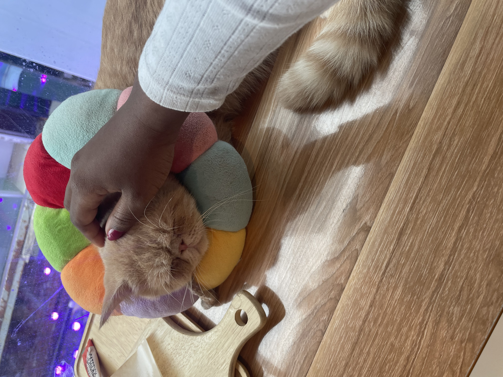
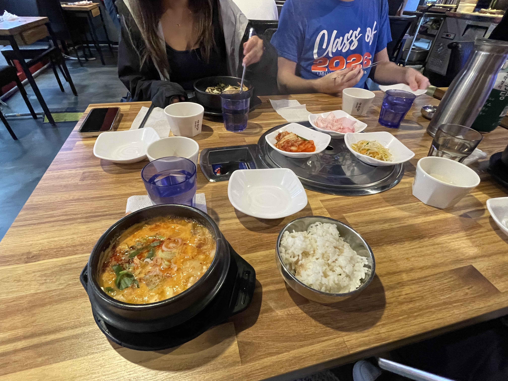
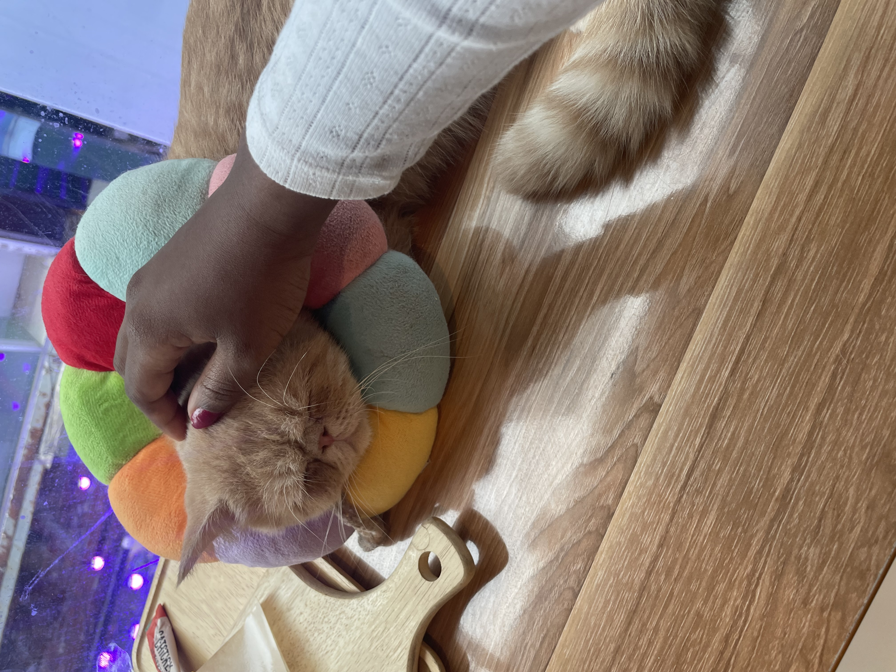
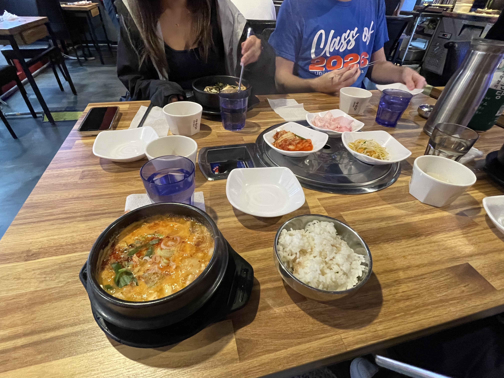

- First Day at Yonsei
Walking onto the Yonsei University campus for the first time felt like stepping into a movie. The early morning air was chilly, the trees lining the paths were still waking up to winter, and the blue “YONSEI” banners waving on the lamp posts made everything feel surreal. I had seen pictures of the campus before, but being there in person—hearing students laughing, the rumble of buses, the little bursts of Korean conversations around me—felt completely different. My first stop was the iconic Underwood Hall. I swear every study-abroad vlog I’ve ever watched filmed at that exact spot. Standing in front of it made me weirdly emotional, like I had finally arrived at a place I’d been imagining for so long. After taking a few pictures (okay… a lot of pictures), I followed the uphill path toward my classroom building. Yonsei has so many slopes—no one warned me about the mini workout you get just walking from building to building. Inside the classroom, I immediately felt the mix of nerves and excitement buzzing through everyone. Students from all over the world were introducing themselves, sharing what languages they spoke and where they were from. The professor’s warm welcome made it feel even more real: "You are now part of the Yonsei community." At lunch, a few of us wandered down toward Sinchon. The streets were full of cafés, restaurants, and little stationery shops that just pulled you in. We ended up getting hotteok from a street vendor, and that first bite—warm, sugary, and crispy—felt like the perfect “welcome to Korea” moment. By the time I headed back to my dorm, my feet hurt, my backpack felt heavier, and my brain was full… but in the best way. My first day at Yonsei wasn’t perfect, or glamorous, or calm—but it was the start of something I know I’ll remember for the rest of my life.
FRIDAY
AUGUST 25, 2023


 


